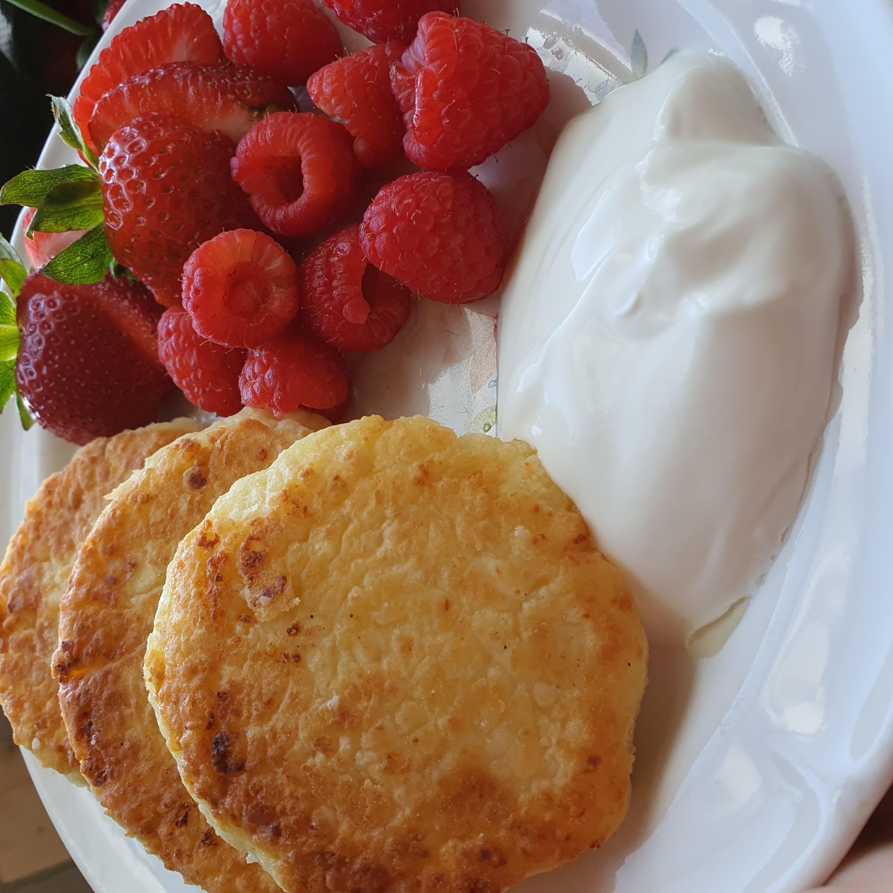

Для того чтобы приготовить сырники вам понадобиться
* 2 столовые ложки сахара
* 2 яйца
* 400 гр. творога
* щепотка соли
* 6-7 столовых ложек муки с горкой, но небольшой
Все это надо тчательно смешать. Масса должна получится по твердости похожая на пюре из банана(чуть мягче). После начинаем лепить небольшие шарики. Жарим их на небольшом огне: с начала одну сторону, потом переворачиваем на другую сторону и закрываем крышкой, даем запечься внутренностям.
После красиво украшаем и подаем на стлол!
